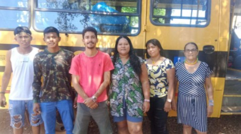
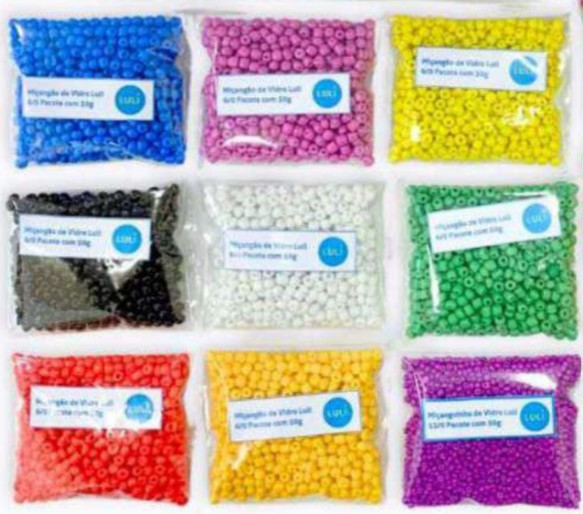

← Voltar para projetos
Fortalecimento cultural e do povo Krahô-kanela na Aldeia Catàmjê
Fortalecer as práticas culturais do povo Krahô-kanela por meio de festas culturais, pintura corporal, canto, festa da laranja, wyty, além de dar visibilidade à participação das mulheres Krahô-kanela em espaços de luta, como a Marcha das Mulheres Indígenas de 2025, envolvendo jovens, anciãos, mulheres e homens da comunidade.

